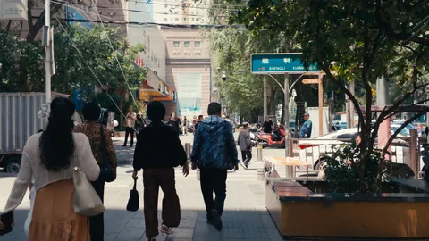
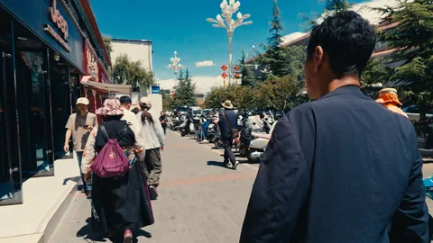
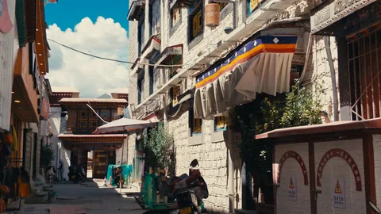
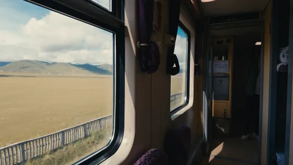

ABOUT THIS SERIES
视频记录了流动的时间，而其中某一帧的定格，可能恰好浓缩了整个瞬间的情绪。
《视频静帧》收集从视频素材中截取的画面，关注光影、构图与偶然定格的瞬间。
全部静帧
14 张






ABOUT THIS SERIES
视频记录了流动的时间，而其中某一帧的定格，可能恰好浓缩了整个瞬间的情绪。
《视频静帧》收集从视频素材中截取的画面，关注光影、构图与偶然定格的瞬间。
14 张



